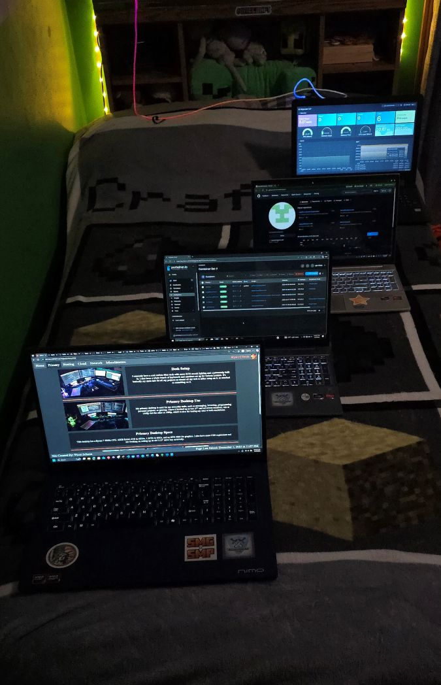
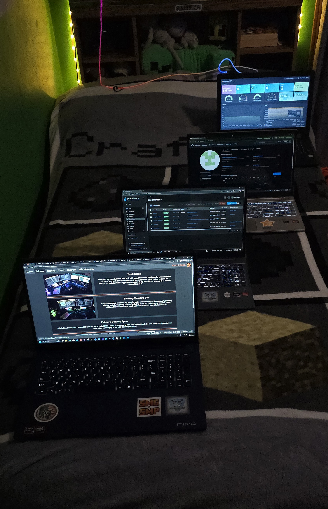

Laptops
These will be in order as you see in the prior image.
Monitoring
This laptop was an old laptop of my brother's I found in the basement.
He didn't want it, and instead of throwing it out, I tried to run some basic Linux software on it to give it new life.
For my purposes, most of my small tasks were already running on my Raspberry Pi or heftier systems.
I decided again instead of throwing it out with some of my other old laptops, I'd have it showing my Minecraft server's stats
constantly as a cool decorative piece in my room. Currently, it's running the Ridgewater CST Minecraft server's Grafana page.
Testing
This was the first laptop I bought, and at the time I hadn't yet bought a desktop. It was cheap at Costco. It took a fall down my school's stairs and got bent up,
and just sucked for gaming, especially Minecraft Java's hefty requirements, so I decided to upgrade a year later.
School
I used this laptop up until college and is the first system I started hosting on. Just like the last one though, the graphics sucked for large games. It met it's end when my friend spilled water on it, which damaged the W and 2 keys as well as the webcam connector.
College
This is the laptop I currently use for college. I got it for $750 on Labor Day with an original cost of $2,000 (What a deal!). Since I have a desktop now, I don't need it for gaming either.
College Laptop Specs
This laptop has a Ryzen 7 8745HS CPU, 32GB Ram, and a 1TB SSD.
It also features a backlit keyboard and 17" display.
School Laptop Specs
This laptop has a Ryzen 7 5700U CPU, 32GB Ram, and a 1TB SSD.
It also features a backlit keyboard.
Testing Laptop Specs
This laptop has a Ryzen 7 5700U CPU, 16GB Ram, and a 512GB SSD.
It also features a backlit keyboard and touchscreen.
Monitoring Laptop Specs
This laptop has an Intel i3-6100U CPU, 6GB Ram, and a 150GB HDD.
It also features an ethernet port.
Drive Bay
To allow for dedicated backup space, I purchased a 5 slot drive bay. On Ebay, I found a lot of 5 hard drives of 3TB capacity.
I use these to back up all my servers using a custom script as well Windows File History. I'm also guilty of using them for transferring files wirelessly.
Scuffed Drive Bay
In the mail, I have 8 4TB SAS drives (32TB total) arriving soon. I have a spare IT SAS controller and will 3D print some stands for the drives.
The drives wll be split into 3 chunks. Sets one and two will be used for my phone to have remote storage and a backup copy.
Both sets will contain two drives (8TB total). Set three will be used for my cloud raid to have a backup. It will have the other four drives (16TB).
Extra Components
I have a spare SAS card flashed in IT mode I will use for my scuffed "drive bay". It has support for 8 drives currently.
I also have a spare 1080 Ti GPU I got for free from my Canadian friend as a spare in case my 3060 fails. Better 6GB than nothing!
The wireless clip mics are for Discord calls while in VR. My normal USB mics would get faint depending how I was facing relative to them.
Of course there's my tablet - a Fire Tab 11 sideloaded with Google Play Services. It has a stylus and paper textured screen protector for drawing.
Finally, I have a capture card I can use to record old devices such as the Xbox 360 or device BIOS/boot screens.
Random Stats!
Total Storage With/Without Raid in consideration (accounting for future 32TB): 63.466/73.866TB. This means only around 14.08% of my storage is in raids.
Total RAM: 695GB
4 Laptops, 2 Desktops, 1 Server, 1 Board, and 5 monitors
5 Keyboards and Mice
Cables!
Have you seen such a scuffed homelab with a better cable management system?
POWER!!!
In my tech parts of my room ONLY, I have 4 power strips and a ups. You can see the UPS on the shelf to the right of the cables,
and the big yellow bar has 12 outlets on it! I have everything plugged into smart meters, and I spent $45 in November alone on just those 4 strips!